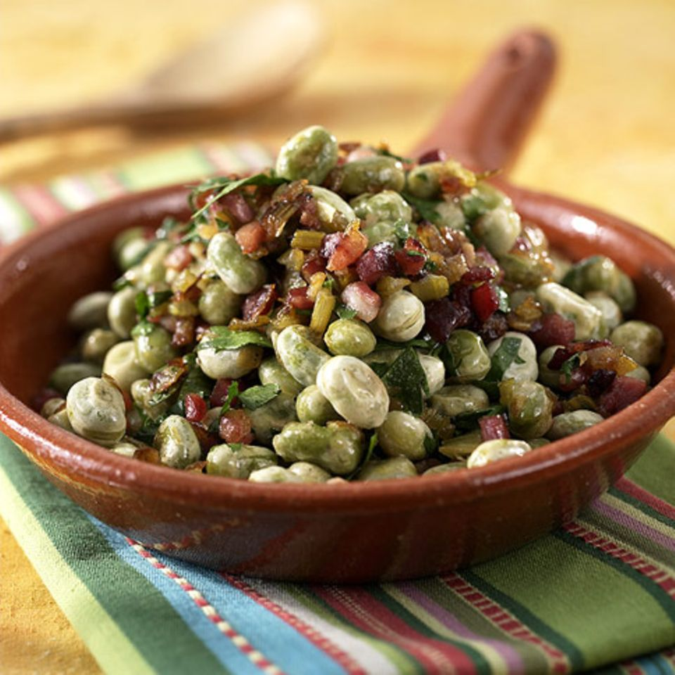

Dicke Bohnen

Dicke Bohnen werden mit in einem großen Topf erhitzt. 2 Gläser sollten für eine normale Portion für 4 Personen
ausreichen.
Den Bohnen einen Becher Sahne hinzugeben. Desweiteren kommen
2 Packungen Kräuter-Schmelzkäse hinzu.
Eine große Prise Salz, Gemüsebrühe-Pulver und Bohnenkraut runden das Gericht ab.
Zutaten
- Dicke Bohnen - 2 Gläser
- 1 Becher Schlagsahne
- 2 Packungen Kräuter-Schmelzkäse
- Bohnenkraut
- Salz
- Gemüsebrühe-Pulver
- Dicke Bohnen in einen Topf geben.
- Topf auf mittlere Hitze stellen.
- Sahne hinzugeben.
- Kräuter-Schmelzkäse hinzugeben.
- Mit Salz und Gemüsebrühe-Pulver abschmecken bis es passt.
- Noch ein wenig köcheln lassen. Wenn es ein wenig stehen bleibt haben die Zutaten zeit ihren Geschmack zu entfalten.
- Guten Hunger!